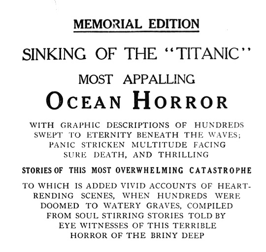

Thursday, April the 12th, 2012
back to: title, date or indexes
Further to yesterday's postage about the RMS Titanic, here is the title page of a 1912 book about the disaster. I miss the days when books had lengthy and descriptive titles. More sunken gigantic ocean liner material at The Public Domain Review.
